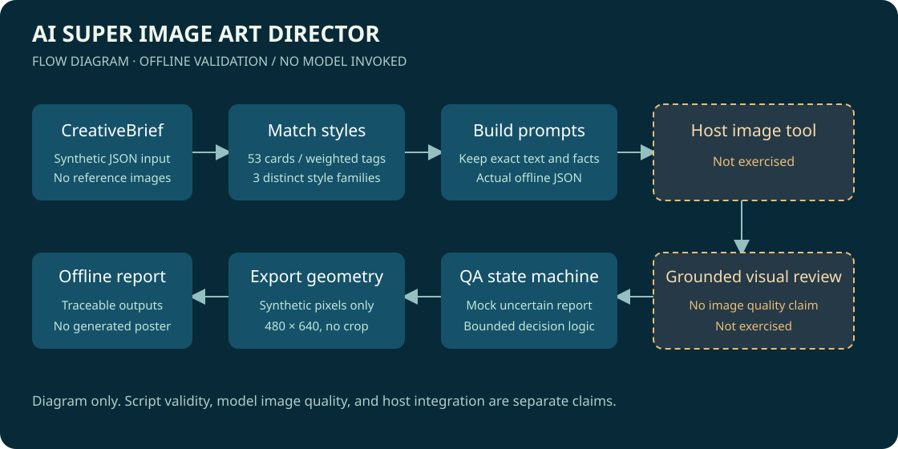
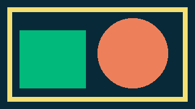
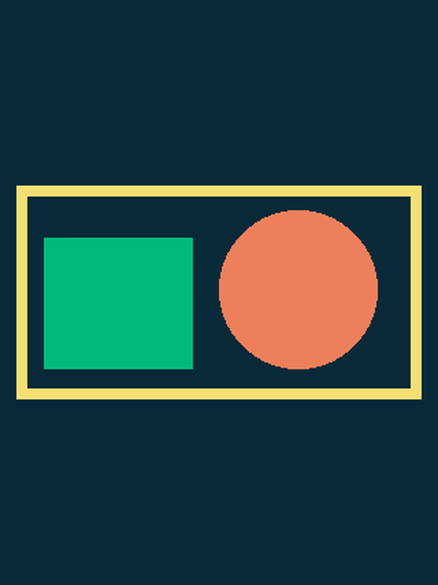

AGENT SKILL / DETERMINISTIC OFFLINE HELPERS
把视觉需求，整理成
可追溯的创意流程。
离线实际运行演示：合成 brief、标签检索、提示词、模拟 QA 与几何 PNG 导出。本次未调用图像模型、未上传参考图；页面没有 AI 生成的海报或真实视觉质量通过记录。
53风格卡
3不同风格族
480 × 640实际导出像素
流程示意
实线为可离线运行的脚本环节，虚线为此次未验证的宿主图像工具与视觉审查。

这份合成 brief 的实际推荐
分数来自原脚本的标签权重，表示输入匹配情况，不表示成图质量。
product_ad
产品注释叙事
把真实产品作为主角，用少量线性注释解释可核实的构造与价值
标签匹配分 17 · 匹配：传播目标、行业、目标用户、应用场景、情绪、平台
three_d
动态黏土
用可触摸的形变表现活力与变化
标签匹配分 17 · 匹配：传播目标、行业、目标用户、应用场景、情绪、平台
technology
数据星群
用可追溯数据点构成叙事图像，而非假装精确的统计
标签匹配分 14 · 匹配：传播目标、行业、应用场景、情绪、平台
原导出器的真实几何测试

输入：320 × 180，代码新造几何像素。
输出：480 × 640，等比适配，上下各补边185像素。未经批准的裁切与覆盖输入均被拒绝。模拟 QA：保持未通过
没有真实生成图时，示例记录保留不确定状态，实际状态机返回 regenerate；第二次修正上限返回 failed_preview。它没有执行视觉检测。
实际模型质量、宿主端到端执行和私人参考图处理均未验证。所有示例输入均为新造合成数据；品牌图库原图、Logo、模型和个人配置不在本演示中。